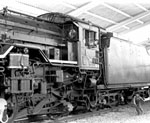

呂清夫 撰文

寓教於樂是教育的理想過程，就像藥品包著糖衣，讓人在愉快的情境下，吸收到身心需要的營養。這種情境如果擴大到一般生活的層面，將使生活更有意義。例如遊樂場，如果能在遊戲之外，不著痕跡的包含一點教育意義，那應該是社教機構的理想了。在日本筑波學園都市，便有一個交通公園。它在十二平方公里的兒童公園中，設置了逼真的好幾個火車站﹑立體交叉道路﹑紅綠燈﹑斑馬線﹑平交道﹑上下坡﹑蒸汽火車頭﹑高速巴士展示等。此外還有沙坑﹑滑梯﹑鞦韆等一般性玩具﹑以及許多出借給兒童的腳踏車﹑大型玩具汽車。這些交通安全措施都佈置得很自然，很美觀，但是隱藏了教練場的架構，所以不但小孩在裡邊煞有介事地開車﹑停車，完全遵守交通規則。大人從旁觀察也有說不出的感受。平常看到街上的紅綠燈總希望趕快出現綠燈，看到斑馬線也要臨深履薄一下，估計一下它有沒有權威，但是在此公園中，即使面對的是如假包換的紅綠燈﹑斑馬線﹑有鈴聲的平交道……，我們卻能很快地拋開了一切的俗慮，好像在欣賞美麗的景色一般。這種超然的感受對大人來說，也是一種新鮮的經驗，難怪它是一個老少咸宜的去處，其中最重要的是路況的模擬要很逼真。至於最逼真的或許要算那個像台中車站的事務所，雖然是辦公處所兼腳踏車﹑玩具車出借處，但是外型卻是十分典雅的火車站，旁邊還鋪設正式的鐵軌﹑平交道﹑蒸汽火車頭……，其整個營造出來的生動氣氛常叫小孩子來了以後就賴著不走。尤其是那個老爺的蒸汽火車頭（D51型，見上圖），不但使大人發思古之幽情，也使小孩聯想到科幻的交通工具。這個蒸汽火車頭的旁邊即標示著﹔這部火車頭走過兩百八十七萬多公里，這個公里數可以在地球與月球之間往返三次云云，似乎星際的交通都納入了寓教於樂的範圍。至於蒸汽火車頭的裡裡外外更不時像爬滿了螞蟻一般，到處有小孩在爬上爬下，東扳扳﹑西弄弄，而火車頭本身也經常維修到可以讓小孩虛擬開火車的樂趣，所以這座公園也就遐邇聞名了。台北汀州路也有一座交通公園，似乎知者不多。據當地居民表示，當初大家都很期待它的出現，不過工程一拖再拖，小孩子從幼稚園開始等待，等到公園開放時竟是中學的時代了。即使說是開放，其實也沒什麼東西可看，最醒目的是一大堆笨重俗艷的車阻，這些車阻大擺長龍，用來圍出一些臨時性的小路，讓小孩在裡邊騎單車﹑開玩具車，但是路況一點也不逼真，跟粗糙的遊樂場沒有兩樣，所以小孩只顧橫衝直撞，顧不了交通。這座交通公園更笨重的是兩棟大建築，小小的園區居然塞進兩間大廟，也不能不說是另一種阿房宮情節。這兩間大廟外型都跟交通無關，只是大而已，其中一間號稱交通博物館，但是看不到「博物」，很多車子的模型不過是小孩子家裡就有的模型車而已，有些展示的模型還是用樂高積木的組合而已，實在不成體統，這可以說是台灣新建博物館的通病，將要立法的「博物館法」一定要注意一點，那就是先有博物才有館。最近老爺的蒸汽火車「騰雲號」曾經喧騰了一時，其實這種火車頭最需要放在所謂的交通博物館，台灣過去這種火車頭真不知凡幾，但是常被當作廢鐵賣到國外去，而且就像我們的少數官員破壞古蹟一樣的面不改色，台灣呀台灣，你什麼時候才能多有一點文化？